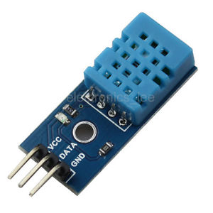
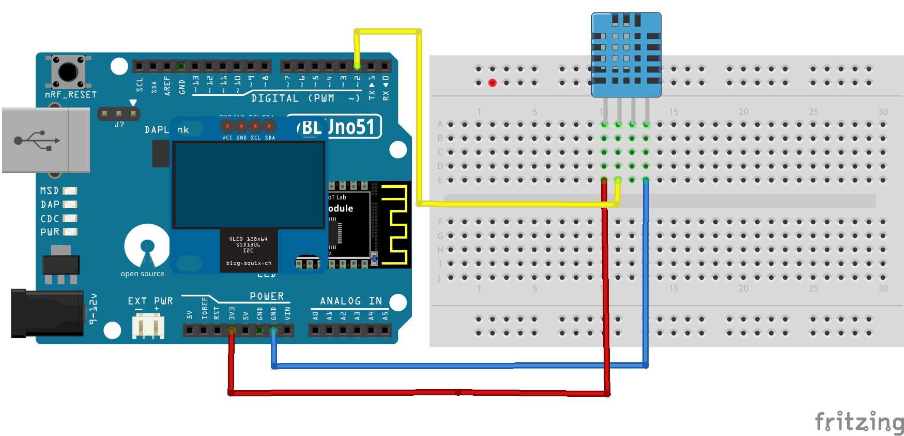

1. Cảm biến nhiệt độ, độ ẩm giá rẻ DHT11
DHT11 Là cảm biến nhiệt độ, độ ẩm rất thông dụng hiện nay vì chi phí rẻ và rất dễ lấy dữ liệu thông qua giao tiếp 1-wire ( giao tiếp digital 1-wire truyền dữ liệu duy nhất). Cảm biến được tích hợp bộ tiền xử lý tín hiệu giúp dữ liệu nhận về được chính xác mà không cần phải qua bất kỳ tính toán nào.
- Đặc điểm:
- Điện áp hoạt động : 3V - 5V (DC)
- Dải độ ẩm hoạt động : 20% - 90% RH, sai số ±5%RH
- Dải nhiệt độ hoạt động : 0°C ~ 50°C, sai số ±2°C
- Tần số lấy mẫu tối đa: 1 Hz
- Khoảng cách truyển tối đa: 20m
- Sơ đồ chân Cảm biến DHT11 gồm 2 chân cấp nguồn, và 1 chân tín hiệu. Hiện nay, thông dụng ngoài thị trường có hai loại đóng gói cho DHT11: 3 chân và 4 chân. Xem các hình dưới


- Nhận xét: Cảm biến nhiệt độ, độ ẩm DHT11 với giá thành rẻ, dễ sử dụng, thích hợp sử dụng trong các ứng dụng yêu cầu độ chính xác không cao, môi trường không khắc nghiệt.
2. Giao tiếp DHT11 với mạch VBLUno51
Trên Adruino, để bo mạch VBLUno51 đọc giá trị nhiệt độ, độ ẩm từ cảm biến DHT11, ta cần sử dụng các thư viện hỗ trợ. Bài viết sử dụng các thư viện của Adafruit.
- DHT-sensor-library
Download tại ĐÂY
- Adafruit_Sensor
Download tại ĐÂY
Để sử dụng thư viện cho Arduino IDE, tải thư viện về máy, lưu tại thư mục Libraries của Arduino IDE.
Ví dụ:
* Windows: Documents\Arduino\libraries
* Linux: ....\arduino-1.6.12\libraries\
3. Demo
Demo này thực hiện việc đo nhiệt độ, độ ẩm từ cảm biến số DHT11 (loại 4 chân), sau đó hiển thị các giá trị lên màn hình OLED I2C.
Tham khảo hướng dẫn sử dụng màn hình OLED tại Tutorial 7
3.1 Kết nối phần cứng
| TT | Chân của DHT11 | Kết nối với mạch VBLUno51 |
|---|---|---|
| 1 | VCC | +3.3V |
| 2 | DATA | D2 |
| 3 | NC | |
| 4 | GND | GND |

3.2. Mã nguồn
//DHT library
#include <DHT.h>
//I2C OLED SSD1306 screen library
#include <Wire.h>
#include <Adafruit_GFX.h>
#include <Adafruit_SSD1306.h>
#define OLED_RESET 4
Adafruit_SSD1306 oled(OLED_RESET);
const int DHT_PIN = 2; //DHT11 is connected to pin D2
const int DHT_TYPE = DHT11;
DHT dht(DHT_PIN, DHT_TYPE);
double temp = 0.0f;
double hum = 0.0f;
void setup(void)
{
// start serial port
Serial.begin(115200);
Serial.println("------------------------------------------");
Serial.println("Example for VBLUno51 board");
Serial.println("Temperature & Humidity (DHT11) Demo");
//start oled
oled.begin(SSD1306_SWITCHCAPVCC, 0x3C);
oled.clearDisplay();
oled.setTextSize(1);
oled.setTextColor(WHITE);
oled.setCursor(0,0);
oled.println("VBLUno51 & DHT11:");
oled.display();
// Start up the DHT library
dht.begin();
delay(500);
}
void loop(void)
{
temp = dht.readTemperature();
hum = dht.readHumidity();
oled.clearDisplay();
oled.setCursor(0,0);
oled.println("VBLUNO51 - DHT11\r\n");
oled.print("Temp(C): ");
oled.println(temp);
oled.print("Humi(%): ");
oled.println(hum);
oled.display();
}
3.3. Kết quả


- Bo mạch VBLUno51 có thể giao tiếp tốt, ổn định với các loại cảm biến thông dụng cho IoT. Chỉ với một vài thao tác đơn giản có thể xây dựng được một ứng dụng hữu ích. Trong bài viết sau, chúng ta sẽ sử dụng các tham số nhiệt độ, độ ẩm đo được từ cảm biến DHT11 để gửi lên ứng dụng di động thông qua giao tiếp Bluetooth Low Energy.